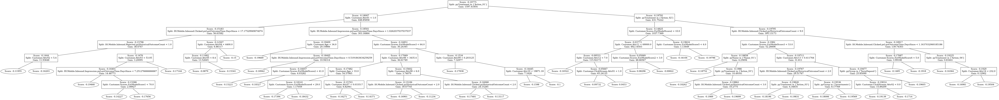
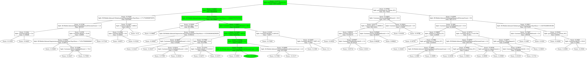

Adaptive Gradient Boosting (AGB) Explained¶
Pega’s Adaptive Decision Manager (ADM) uses Adaptive Gradient Boosting (AGB) as its default predictive algorithm for Next-Best-Action recommendations. AGB is an online-learning variant of gradient boosted trees that continuously updates as new customer interactions arrive — no batch retraining required. Just as important, AGB changes the learning unit: instead of treating each action/channel slice as an isolated model, it can use action and context fields as predictors in one ensemble. Sparse or newly introduced actions can therefore benefit from patterns learned elsewhere, rather than starting from a completely separate blank slate.
Pega documentation:
Adaptive Gradient boosting overview — what AGB is and why it replaces Naïve Bayes
The Gradient boosting technique — deep dive: ensemble construction, gain formula, ADWIN pruning
Downloading a Gradient boosting Adaptive Model — how to export the JSON from Prediction Studio
Interpreting Gradient boosting predictor importance — reading the feature importance analysis in Prediction Studio
This notebook explains:
How a single decision tree works — nodes, splits, and the gain formula.
How trees combine into an ensemble, how the model grows over time, and the cold-start / warm-start behaviour.
How a customer is scored — tracing the path through every tree.
Which predictors matter — feature importance from split gains.
How to read model health — key metrics and what they signal.
Model AUC and calibration — how the model is evaluated and what the AUC score means.
All examples use the pdstools sample AGB model.
📦 Optional dependencies
This article uses features from the pdstools
admextra, and requirespydotandgraphvizfor tree visualizations. Install with your favorite package manager, e.g.uv pip install "pdstools[adm]" pydot graphviz.
[2]:
import json
import polars as pl
from math import exp
from great_tables import GT
from pdstools import datasets
AGBModel = datasets.sample_trees()
# To use your own model, export the JSON from Prediction Studio and load it with:
# from pdstools.adm.trees import ADMTreesModel
# AGBModel = ADMTreesModel.from_file("path/to/model_export.json")
# See: https://docs.pega.com/bundle/platform/page/platform/pega-ai-tools/export-model-data-prediction-studio.html
print(f"Loaded model: {len(AGBModel.model)} trees, Pooled AUC={AGBModel.metrics['auc']:.4f}")
print(f"Training data: {AGBModel.metrics['response_positive_count']:,} positives, "
f"{AGBModel.metrics['response_negative_count']:,} negatives")
Loaded model: 83 trees, Pooled AUC=0.8098
Training data: 56,182 positives, 10,631,119 negatives
Caveat: Pooled AUC—computed by mixing prediction scores and outcomes across all actions before drawing a single ROC curve—is systematically inflated by action base-rate differences and action-mix. It is therefore not a reliable measure of the discriminative power of any individual action model. For model-performance assessment, prefer the response-count weighted average of per-action AUC values: this is the AUC shown in Prediction Studio’s Adaptive Model Performance view. The standalone AGB JSON export used in this notebook does not contain the per-action AUCs needed to calculate that weighted value; it only exposes the exported pooled AUC scalar. See Pooled vs weighted-average AUC below.
0. Quick Sanity Check¶
Before diving into the detailed walkthrough below, it’s worth checking whether a model has actually learned anything meaningful. A handful of metrics values, taken together, tell you that at a glance:
Too few trees / mostly stumps — the model hasn’t had enough responses (or enough signal) to build real structure yet.
Pooled AUC ≈ 0.5 — no discriminative power; predictions are indistinguishable from random. (As elsewhere in this notebook, this is the pooled AUC exported with the model — not the weighted-average AUC across actions.)
Negatives ≤ positives — for a typical NBA response model this is inverted (responses are usually rare), and can indicate a sampling issue, a very high base rate, or a still-forming candidate model.
Very few active predictors — the model is only using a sliver of the available data to make decisions.
None of these are fatal on their own (a brand-new candidate model is supposed to look like this for a while), but several at once mean a model’s plots and metrics are not yet a reliable read on its real-world performance. ADMTreesModel.sanity_check() runs these checks for you:
[3]:
# Quick sanity check — flags a handful of "this model may not have learned
# anything useful yet" signals.
result = AGBModel.sanity_check()
print(f"Sanity check ({result['n_trees']} trees, Pooled AUC={result['pooled_auc']:.4f}, "
f"{result['positive_count']:,} pos / {result['negative_count']:,} neg):\n")
if result["flags"]:
print(f"⚠ {len(result['flags'])} red flag(s):")
for msg in result["flags"]:
print(f" ⚠ {msg}")
print("\nTreat the detailed sections below as illustrative of the mechanics,")
print("not as a reliable read on this model's real-world performance yet.")
else:
print("✓ No red flags from this quick check — proceed to the detailed walkthrough below.")
Sanity check (83 trees, Pooled AUC=0.8098, 56,182 pos / 10,631,119 neg):
✓ No red flags from this quick check — proceed to the detailed walkthrough below.
1. The Building Block: A Single Decision Tree¶
AGB is an ensemble of binary decision trees. Each tree is a directed graph where internal nodes split the population by a predictor threshold and leaf nodes hold a score (a real number in log-odds space).
The model JSON stores each tree as a nested dict. Here is the root node of the first tree:
[4]:
# Show the root node of tree 0 — the first split the model makes
root = AGBModel.model[0]
print(json.dumps(
{k: v for k, v in root.items() if k not in ("left", "right")},
indent=2,
))
{
"score": -0.19775,
"gain": 1597.41854,
"sampleCount": 15052537,
"split": "pyTreatment in { Action_01 }"
}
Each node contains:
Field |
Meaning |
|---|---|
|
The branching condition ( |
|
How much this split reduces prediction error (see formula below). |
|
The log-odds leaf score assigned to customers reaching this node. |
|
Number of training responses routed through this node. |
|
Child sub-trees (condition true → left, false → right). |
The Split Gain Formula¶
AGB uses the XGBoost-style gradient-based split gain. For a candidate split that partitions the training responses into left (\(L\)) and right (\(R\)) groups:
Where:
\(G = \sum g_i\) with \(g_i = p_i - y_i\) — the prediction error (residual) of the current model for response \(i\).
\(H = \sum h_i\) with \(h_i = p_i(1 - p_i)\) — the Hessian (curvature).
\(\lambda\) — L2 regularisation on leaf scores.
\(\gamma\) — the complexity threshold: a split is only created when Gain \(> 0\) after subtracting \(\gamma\). This prevents over-splitting.
Advanced settings such as learning rate, regularisation, minimum split gain, maximum depth, and maximum tree count constrain how trees grow and how much each tree can contribute. They do not turn AGB into a scheduled batch-training process; the model still learns from the incoming response stream.
A split is only added to the tree if this gain is positive. High gain at the root means the split strongly separates positives from negatives.
ADWIN — the adaptation mechanism: Each node continuously monitors its prediction error using an Adaptive Sliding Window (ADWIN). When the error rises — signalling concept drift — the window shrinks and the effective gain falls. Branches whose gain drops below \(\gamma\) are pruned, allowing the model to forget stale patterns and grow fresh splits.
[5]:
# Predictors used by this model, by type
print(f"Total predictors: {len(AGBModel.predictors)}")
for ptype in ["symbolic", "numeric"]:
names = [k for k, v in AGBModel.predictors.items() if v == ptype]
print(f" {ptype}: {len(names)} — e.g. {names[:3]}")
Total predictors: 194
symbolic: 28 — e.g. ['pyTreatment', 'pyName', 'pyGroup']
numeric: 166 — e.g. ['Customer.Attr01', 'IH.Mobile.Inbound.Clicked.pxLastOutcomeTime.DaysSince', 'IH.Mobile.Inbound.Rejected.pyHistoricalOutcomeCount']
[6]:
# Visualise tree 0 (requires pydot + graphviz)
AGBModel.plot.tree(0)

[6]:
<pydot.core.Dot at 0x7f79710db190>
2. The Ensemble: How Trees Build on Each Other¶
AGB is an additive model. Each new tree is trained on the residuals of all previous trees — it corrects whatever the ensemble got wrong so far.
The Scoring Formula¶
For a customer \(x\), the raw log-odds score is the sum of all leaf scores:
where \(\text{score}_k(x)\) is the leaf score of tree \(k\) for input \(x\).
The propensity (predicted probability of a positive outcome) is:
The leaf scores stored in the model JSON already incorporate the learning rate (\(\eta\)) applied during training — there is no separate \(\eta\) factor at scoring time.
Cold Start and Warm Start¶
Cold start: A new model starts with zero trees, so \(s = 0\) and the initial propensity is exactly \(\sigma(0) = 0.5\):
[7]:
from math import exp
# Cold-start propensity: no trees → score sum is 0
cold_start_propensity = 1 / (1 + exp(0))
print(f"Cold-start propensity: {cold_start_propensity}") # exactly 0.5
Cold-start propensity: 0.5
Warm start: When a new treatment or action is introduced with similar attributes to an existing one, the model immediately benefits from predictors it has already learned. The new treatment reuses splits built for similar treatments, giving it an advantage over a blank-slate model. This is the practical payoff of learning across action and context combinations in one ensemble rather than maintaining a fully isolated model per slice.
Per-Tree Statistics¶
The table below summarises each tree. Early trees capture the strongest signals (high gain, large root score magnitude). Later trees make finer corrections.
[8]:
# Per-tree summary — drop the raw gains list for display
(
GT(
AGBModel.tree_stats
.select("treeID", "score", "depth", "nsplits", "meangains")
.rename({"treeID": "Tree", "score": "Root score", "depth": "Depth",
"nsplits": "Splits", "meangains": "Mean gain"})
.head(10)
)
.tab_header(title="First 10 AGBModel — Summary")
.fmt_number(columns=["Root score", "Mean gain"], decimals=4)
)
[8]:
| First 10 AGBModel — Summary | ||||
| Tree | Root score | Depth | Splits | Mean gain |
|---|---|---|---|---|
| 0 | −0.1978 | 7 | 46 | 123.2251 |
| 1 | −0.1798 | 7 | 76 | 69.8476 |
| 2 | −0.1663 | 7 | 65 | 66.4289 |
| 3 | −0.1557 | 7 | 49 | 59.6910 |
| 4 | −0.1472 | 7 | 76 | 34.5377 |
| 5 | −0.1402 | 7 | 58 | 62.0967 |
| 6 | −0.1345 | 7 | 54 | 68.5465 |
| 7 | −0.1297 | 7 | 51 | 66.8250 |
| 8 | −0.1256 | 7 | 66 | 59.6349 |
| 9 | −0.1218 | 7 | 73 | 42.7853 |
[9]:
# Gain contribution per tree — early trees dominate
AGBModel.plot.gain_per_tree()
Interpreting this chart: A healthy ensemble shows a steep decline from left to right — the first 10–20 trees capture the bulk of the gain and later trees make progressively smaller corrections. A flat or rising tail suggests the model is still actively learning or that concept drift is continuously introducing new signal.
[10]:
# Cumulative gain share — S-curve showing how quickly the ensemble saturates
AGBModel.plot.cumulative_gain_share()
Interpreting this chart: The dashed line marks where 50% of total gain has accumulated. Good: this crossover should fall well before the midpoint of the tree count — in this model around tree 38 out of 83 — confirming that a small core of early trees does most of the work and later trees add diminishing corrections. A late crossover (past the halfway point) indicates an unusually flat gain distribution.
Training Stream¶
Because AGB trains online, we can reconstruct the timeline of tree additions from the sampleCount stored in each tree’s root node. A new tree is added after the ensemble has processed enough new responses to detect an improvement opportunity.
[11]:
# Total responses seen when each tree was added
AGBModel.plot.training_stream_timeline()
Interpreting this chart: Each point is a tree; the y-axis shows the total responses seen at the moment that tree was added. Good: a gently declining curve — the first tree was trained on the most data, and each subsequent tree refines a gradually changing stream. Steep steps indicate a burst of new data that triggered a new tree; a very flat curve suggests data was arriving slowly during that period.
[12]:
# Response volume between consecutive tree additions
# Spikes indicate bursts of activity; long gaps indicate slow learning periods
AGBModel.plot.inter_tree_gaps()
Interpreting this chart: Each bar is the change in root sampleCount from the previous tree. Most values are negative (the ADWIN window shrinks between tree additions as old responses age out). Good: gaps cluster near zero with occasional small negative or positive spikes. Large positive spikes mark a flood of new training data that triggered a new tree; large negative spikes indicate significant pruning of stale observations.
[13]:
# Gain decay — how much each tree contributes relative to its age
# x-axis: responses seen since that tree was added
AGBModel.plot.gain_decay_dual_lens()
Interpreting this chart: The steelblue trace shows gain by tree-index order; the orange dotted trace replots the same gain against training age (responses seen since that tree was added). Good: gain should be highest for the youngest trees (low training age, right side of the orange trace) and decay as trees age, confirming the model continuously renews itself. If the two traces look nearly identical in shape, the training rate has been roughly constant.
3. Scoring a Customer¶
To score a customer, the model traverses every tree from root to leaf, collecting the leaf score for each tree, then applies the sigmoid.
Let’s trace a concrete customer through the model.
[14]:
# Build a concrete customer profile.
# For each predictor we pick the first threshold value seen in the model's splits
# (giving a real, self-consistent set of inputs), then override a few key fields.
x = {
pred: (
float(next(iter(AGBModel.all_values_per_split[pred])))
if ptype == "numeric" and pred in AGBModel.all_values_per_split
else next(iter(AGBModel.all_values_per_split.get(pred, {"Unknown"})))
)
for pred, ptype in AGBModel.predictors.items()
}
# Fix the treatment so tree 0 takes its left (positive) branch
x["pyTreatment"] = "Action_01"
# Show just the key context-key predictors
print("Key predictor values for this customer:")
for pred in ["pyTreatment", "pyName", "pyGroup"]:
print(f" {pred} = {x[pred]!r}")
Key predictor values for this customer:
pyTreatment = 'Action_01'
pyName = 'Name_04'
pyGroup = 'Overdraft'
[15]:
# Highlight the path taken through tree 0 (green nodes = visited)
AGBModel.plot.tree(0, highlighted=x)

[15]:
<pydot.core.Dot at 0x7f79140e3e90>
[16]:
# Per-tree leaf scores for this customer
visited = AGBModel.get_all_visited_nodes(x)
(
GT(
visited.select("treeID", "score")
.rename({"treeID": "Tree", "score": "Leaf score"})
.head(10)
)
.tab_header(title="First 10 Leaf Scores for Customer x")
.fmt_number(columns=["Leaf score"], decimals=6)
)
[16]:
| First 10 Leaf Scores for Customer x | |
| Tree | Leaf score |
|---|---|
| 0 | −0.112340 |
| 1 | −0.142290 |
| 2 | −0.161190 |
| 3 | −0.156480 |
| 4 | −0.141790 |
| 5 | −0.132290 |
| 6 | −0.111840 |
| 7 | −0.120430 |
| 8 | −0.123950 |
| 9 | −0.122460 |
[17]:
# Manual verification: sum all leaf scores, apply sigmoid
raw_score = visited.get_column("score").sum()
propensity_manual = 1 / (1 + exp(-raw_score))
propensity_library = AGBModel.score(x)
print(f"Sum of leaf scores: {raw_score:.6f}")
print(f"Propensity (manual σ(s)): {propensity_manual:.6f}")
print(f"Propensity (AGBModel.score): {propensity_library:.6f}")
print(f"Match: {abs(propensity_manual - propensity_library) < 1e-10}")
Sum of leaf scores: -4.085230
Propensity (manual σ(s)): 0.016541
Propensity (AGBModel.score): 0.016541
Match: True
[18]:
# Running propensity as each tree is added — shows convergence
AGBModel.plot.contribution_per_tree(x)
Interpreting this chart: Each bar is the incremental propensity change added by one tree for this specific customer. Good: the running total (visible in the cumulative trace) converges quickly — typically after 20–30 trees — and subsequent trees make only small adjustments. A propensity that is still oscillating late in the ensemble indicates a borderline customer where the model is genuinely uncertain.
4. Feature Importance: Which Predictors Drive the Model?¶
A predictor’s importance is measured by its total split gain — the sum of gain values at every split node that uses that predictor, across all trees. This is an operational monitoring signal, not a causal explanation: it shows which predictors the ensemble used to reduce error, not whether those predictors caused the outcome or why one individual customer received a specific propensity.
Note on Prediction Studio: In the Prediction Studio UI, feature importance is shown as a 0–100 score that sums to 100 across all active predictors. The plots below use raw total gain (absolute scale), which is more useful for analysis but differs from the normalized UI value. Prediction Studio also offers treatment-level feature importance, showing which predictors matter most for each individual treatment.
Predictors are grouped into ADM-style PredictorCategory values that indicate the data source. The base categories and colors are the same defaults used by ADM plots:
Prefix or match |
Predictor category |
Source |
|---|---|---|
(no dot) |
Primary |
Primary/context predictors such as |
|
IH |
Interaction History predictors |
|
Customer |
Customer attribute predictors |
|
Param |
Parameter predictors |
|
|
Any other dot-prefixed namespace |
HC external-score keywords |
External Model |
Predictors whose names contain terms such as |
The next cell applies the same external-model keyword defaults used by the Health Check import screen, so score-like predictors are colored and labelled consistently with ADM Health Check outputs.
Predictors pre-processing¶
Symbolic predictors are encoded into a bounded bin space. This gives AGB more usable symbolic resolution than the classic Naïve Bayes algorithm while keeping very high-cardinality values from exploding the model; rare values may share bins.
Numeric predictors are pre-processed using percentile streaming / quantile-style intervals, so extreme values fall into edge intervals rather than stretching the split space.
Both pre-processing steps contribute to AGB’s higher predictive power compared to the classic algorithm.
[19]:
# Top split patterns by total gain
top_splits = (
AGBModel.grouped_gains_per_split
.with_columns(pl.col("gains").list.sum().alias("total_gain"))
.sort("total_gain", descending=True)
.head(10)
)
(
GT(top_splits.select("split", "predictor", "n", "mean", "total_gain"))
.tab_header(title="Top 10 Split Patterns by Total Gain")
.cols_label(split="Split condition", predictor="Predictor", n="# occurrences",
mean="Mean gain", total_gain="Total gain")
.fmt_number(columns=["mean", "total_gain"], decimals=1)
)
[19]:
| Top 10 Split Patterns by Total Gain | ||||
| Split condition | Predictor | # occurrences | Mean gain | Total gain |
|---|---|---|---|---|
| pyGroup in { Investments } | pyGroup | 43 | 669.6 | 28,794.8 |
| IH.Mobile.Inbound.Clicked.pyHistoricalOutcomeCount < 3.0 | IH.Mobile.Inbound.Clicked.pyHistoricalOutcomeCount | 24 | 546.2 | 13,109.6 |
| IH.Mobile.Inbound.Clicked.pxLastOutcomeTime.DaysSince < 4.437152777777778E-4 | IH.Mobile.Inbound.Clicked.pxLastOutcomeTime.DaysSince | 5 | 1,923.4 | 9,617.2 |
| pyTreatment in { Action_01 } | pyTreatment | 16 | 601.0 | 9,616.4 |
| pyGroup in { Savings, PersonalLoan, DailyBanking, CardPayments, Overdraft, TermDeposit, AncillaryServices, CreditCard } | pyGroup | 21 | 455.0 | 9,554.1 |
| IH.Mobile.Inbound.Clicked.pyHistoricalOutcomeCount < 2.0 | IH.Mobile.Inbound.Clicked.pyHistoricalOutcomeCount | 50 | 178.5 | 8,927.5 |
| pyTreatment in { Action_05, Action_06, Action_07, Action_08, Action_09, Action_10, Action_11, Action_12, Action_13, Action_14, Action_15, Action_16, Action_17, Action_18, Action_19, Action_20, Action_21, Action_22, Action_23, Action_24, Action_25, Action_26, Action_27, Action_28, Action_29, Action_30, Action_31, Action_32, Action_33, Action_34, Action_35, Action_36, Action_37, Action_38, Action_39 } | pyTreatment | 30 | 263.2 | 7,895.9 |
| pyTreatment in { Action_05, Action_06, Action_07, Action_08, Action_09, Action_10, Action_11, Action_12, Action_13, Action_14, Action_15, Action_16, Action_17, Action_18, Action_19, Action_20, Action_21, Action_22 } | pyTreatment | 43 | 148.6 | 6,391.3 |
| IH.Mobile.Inbound.Clicked.pyHistoricalOutcomeCount < 4.0 | IH.Mobile.Inbound.Clicked.pyHistoricalOutcomeCount | 17 | 348.3 | 5,920.5 |
| pyGroup in { TermDeposit } | pyGroup | 34 | 162.8 | 5,535.1 |
[20]:
# Gain distribution per split condition for the top-5 predictors by total gain
top_preds = (
AGBModel.grouped_gains_per_split
.with_columns(pl.col("gains").list.sum().alias("total_gain"))
.group_by("predictor")
.agg(pl.col("total_gain").sum())
.sort("total_gain", descending=True)
.head(5)
.get_column("predictor")
.to_list()
)
AGBModel.plot.splits_per_variable(subset=set(top_preds));
[21]:
# Health Check uses these default keyword matches for external model scores.
# Keep this notebook aligned so AGB and ADM Health Check plots label score-like
# predictors consistently.
from pdstools.adm.trees._plots import _PREDICTOR_CATEGORY_VALUE
HEALTH_CHECK_EXTERNAL_MODEL_KEYWORDS = (
"Propensity",
"Score",
"Class",
"Classifier",
"Classification",
"Probability",
"Prediction",
"Predicted",
"ModelScore",
)
external_model_score_expr = pl.any_horizontal(
*[
pl.col("predictor").cast(pl.Utf8).str.contains(keyword, literal=True)
for keyword in HEALTH_CHECK_EXTERNAL_MODEL_KEYWORDS
]
)
AGBModel.plot.predictor_category_expr = (
pl.when(external_model_score_expr)
.then(pl.lit("External Model"))
.otherwise(_PREDICTOR_CATEGORY_VALUE)
.alias("PredictorCategory")
)
[22]:
# Overall feature importance ranked by total gain
AGBModel.plot.feature_importance_by_gain()
Interpreting this chart: Predictors are sorted by their total split gain across all trees. Good: model-context fields (pyGroup, pyIssue, pyTreatment) dominating the top is expected and healthy — AGB uses a single model for all actions, so action identity is a powerful discriminator. Below those, interaction-history (IH.*) and customer-attribute predictors should contribute meaningfully. A single non-context predictor taking >50% of the gain warrants investigation for
potential data leakage.
[23]:
# Gain share by predictor category (IH.* vs Customer.* vs Primary / Param)
AGBModel.plot.gain_by_namespace()
Interpreting this chart: Each bar shows one predictor category’s share of total split gain. Good: several categories each claiming 15–40% of the gain, indicating the model draws on diverse signals. A single category above 70–80% may indicate that other data sources are unavailable or that those predictors are inactive.
[24]:
# Early learner vs late refiner — which predictors drive the first quarter of trees
# vs the last quarter? Persistent predictors appear in both halves.
AGBModel.plot.early_vs_late_gain()
Interpreting this chart: Points above the diagonal are late refiners — their gain increases after many responses have arrived. Points below are early specialists — they drive the initial rapid learning. Good: model-context fields (pyGroup, pyIssue) typically land near the upper-left (early, dominant); behavioural predictors (IH.*) gradually strengthen over time and appear near or above the diagonal. Predictors clustered near the bottom-left contributed little in either
phase and may be inactive.
[25]:
# Feature role map:
# x-axis = mean split depth (shallow = high-level router, deep = specialist refiner)
# y-axis = fraction of trees where the predictor appears (coverage)
# size = total gain
AGBModel.plot.feature_role_map()
Interpreting this chart: The x-axis is mean split depth — shallow predictors (near 0) act as high-level routers at the top of every tree; deeper predictors fire only for specific sub-populations. The y-axis shows the fraction of trees the predictor appears in (coverage); bubble size is total gain. Good: model-context fields such as pyGroup should be shallow and widely covered; individual IH or customer predictors should be deeper and more selective. A large bubble with shallow depth
and broad coverage is a powerful universal signal. A predictor with high coverage but a tiny bubble is splitting often without much gain — a candidate for review.
Single-case attribution (SHAP): For individual propensity attribution — “why did this customer receive this propensity?” — Prediction Studio uses Shapley values (SHAP). The split-gain importance shown above is a model-level signal; SHAP provides the complementary per-customer view.
5. Model Health at a Glance¶
The metrics dictionary captures a comprehensive set of health indicators computed from the model structure. In production, many of these metrics are exposed through Prediction Studio telemetry and model reports.
Key signals to watch:
Metric |
Healthy range |
Signal |
|---|---|---|
|
< 1 |
Converging model; > 1 may indicate instability |
|
< 0.5 |
High value = over-reliance on one predictor |
|
High |
Low entropy = gain concentrated in few predictors |
|
Low |
High = heavy pruning, possible concept drift |
|
— |
Expected; model converging |
[26]:
# Build a readable metrics table
from IPython.display import HTML
descriptions = AGBModel.metric_descriptions()
metrics_df = pl.DataFrame({
"Metric": list(AGBModel.metrics.keys()),
"Value": [
f"{v:.4f}" if isinstance(v, float) else str(v)
for v in AGBModel.metrics.values()
],
"Description": [descriptions.get(k, "") for k in AGBModel.metrics.keys()],
})
table_html = (
GT(metrics_df)
.tab_header(title="Model Health Metrics")
.cols_width({"Metric": "25%", "Value": "15%", "Description": "60%"})
.as_raw_html()
)
HTML(f'<div style="max-height:420px;overflow-y:auto">{table_html}</div>')
[26]:
| Model Health Metrics | ||
| Metric | Value | Description |
|---|---|---|
| auc | 0.8098 | Area Under the ROC Curve — overall model discrimination power. |
| success_rate | 0.0053 | Proportion of positive outcomes in the training data. |
| factory_update_time | 2026-01-01T00:00:00.000Z | Timestamp of the last factory (re)build of this model. |
| response_positive_count | 56182 | Number of positive responses in training data. |
| response_negative_count | 10631119 | Number of negative responses in training data. |
| number_of_tree_nodes | 11329 | Total node count across all trees (splits + leaves). |
| tree_depth_max | 8 | Maximum depth of any single tree in the ensemble. |
| tree_depth_avg | 7.7800 | Average depth across all trees. |
| tree_depth_std | 0.6600 | Standard deviation of tree depths — uniformity of tree complexity. |
| number_of_trees | 83 | Total number of boosting rounds (trees) in the model. |
| number_of_stump_trees | 0 | Trees with no splits (single root node). Stumps contribute no learned signal. |
| avg_leaves_per_tree | 68.7500 | Average number of leaf nodes per tree — a proxy for tree complexity. |
| number_of_splits_on_ih_predictors | 1231 | Total splits on Interaction History (IH.*) predictors. |
| number_of_splits_on_context_key_predictors | 485 | Total splits on context-key predictors (py*, Param.*, *.Context.*). |
| number_of_splits_on_other_predictors | 3907 | Total splits on customer/other predictors. |
| total_number_of_active_predictors | 194 | Predictors that appear in at least one split. |
| total_number_of_predictors | 194 | All predictors known to the model (active or not). |
| number_of_active_ih_predictors | 15 | Active IH predictors (appear in splits). |
| total_number_of_ih_predictors | 15 | All IH predictors in the model configuration. |
| number_of_active_context_key_predictors | 5 | Active context-key predictors. |
| number_of_active_symbolic_predictors | 25 | Active symbolic (categorical) predictors. |
| total_number_of_symbolic_predictors | 28 | All symbolic predictors in configuration. |
| number_of_active_numeric_predictors | 166 | Active numeric (continuous) predictors. |
| total_number_of_numeric_predictors | 166 | All numeric predictors in configuration. |
| total_gain | 307905.2567 | Sum of all split gains — total information gained by the ensemble. |
| mean_gain_per_split | 54.7582 | Average gain per split node (analogous to XGBoost gain importance). |
| median_gain_per_split | 6.8670 | Median gain — robust central tendency, less sensitive to outlier splits. |
| max_gain_per_split | 3945.7724 | Largest single split gain — identifies the most informative split. |
| gain_std | 214.4065 | Standard deviation of gains — high values indicate a few dominant splits. |
| number_of_leaves | 5706 | Total leaf nodes across all trees. |
| leaf_score_mean | -0.0533 | Average leaf score (log-odds contribution). Near zero means balanced. |
| leaf_score_std | 0.0532 | Spread of leaf scores — wider spread means better discrimination. |
| leaf_score_min | -0.1989 | Most negative leaf score. |
| leaf_score_max | 0.4565 | Most positive leaf score. |
| number_of_numeric_splits | 4966 | Splits using '<' (numeric/continuous thresholds). |
| number_of_symbolic_splits | 637 | Splits using 'in' or '==' (categorical membership). |
| symbolic_split_fraction | 0.1137 | Fraction of splits that are symbolic (0–1). |
| number_of_unique_splits | 3331 | Distinct split conditions across all trees. |
| number_of_unique_predictors_split_on | 194 | Number of distinct predictor variables used in splits. |
| split_reuse_ratio | 1.6900 | Total splits / unique splits — how often the same condition recurs across trees. |
| avg_symbolic_set_size | 10.7400 | Average number of categories in symbolic 'in { ... }' splits. |
| mean_abs_score_first_10 | 0.1499 | Mean |root score| of the first 10 trees — initial correction magnitude. |
| mean_abs_score_last_10 | 0.0087 | Mean |root score| of the last 10 trees — late correction magnitude. |
| score_decay_ratio | 0.0579 | Ratio last/first — values < 1 indicate convergence, >> 1 indicates instability. |
| mean_gain_first_half | 53.9931 | Average gain in the first half of trees. |
| mean_gain_last_half | 55.7222 | Average gain in the second half — lower values suggest convergence. |
| top_predictor_by_gain | pyGroup | Predictor with the highest total gain. |
| top_predictor_gain_share | 0.1569 | Fraction of total gain from the top predictor (0–1). High = dominance. |
| predictor_gain_entropy | 0.5906 | Normalised Shannon entropy of gain distribution (0–1). Low = concentrated. |
[27]:
# Key "model not developing" diagnostics (SOP-ADM009)
# The split/tree ratio is computable from any model export.
# Saturation metrics require a datamart Modeldata blob — see note below.
m = AGBModel.metrics
total_splits = m["number_of_numeric_splits"] + m["number_of_symbolic_splits"]
ratio = total_splits / m["number_of_trees"]
print(f"Avg splits / tree: {ratio:.1f} ({'✓ OK' if ratio > 1 else '⚠ ALERT — model not developing'})")
print(f"Active predictors: {m['total_number_of_active_predictors']} "
f"({'✓' if m['total_number_of_active_predictors'] >= 10 else '⚠ < 10 — may be too few to develop'})")
if "number_of_saturated_context_key_predictors" in m:
print(f"Saturated context-key: {m['number_of_saturated_context_key_predictors']}")
print(f"Saturated symbolic: {m['number_of_saturated_symbolic_predictors']}")
print(f"Max context-key fill rate: {m['max_saturation_rate_on_context_key_predictors']:.0f} %")
else:
print("Saturation metrics: not available for Prediction Studio exports.")
print("Load via ADMDatamart.agb to see encoder fill rates.")
Avg splits / tree: 67.5 (✓ OK)
Active predictors: 194 (✓)
Saturation metrics: not available for Prediction Studio exports.
Load via ADMDatamart.agb to see encoder fill rates.
Interpreting this output: Avg splits/tree is the primary “not developing” signal — at or below 1 means most trees are stumps and the model is not learning structure from the data despite receiving responses. If saturation metrics are available, check them first: a predictor whose encoder table is full cannot contribute new splits regardless of data volume, which explains why gain flatlines even as response counts climb.
[28]:
# Splits by predictor type over the ensemble — symbolic vs numeric usage
AGBModel.plot.splits_per_variable_type()
Interpreting this chart: The Absolute view shows raw split counts per predictor type across trees; click Relative to compare proportional mix. A healthy model shows a stable percentage mix throughout the ensemble — a sudden shift late in training (e.g. symbolic splits spiking) can indicate a new data source becoming active or an imbalance in predictor coverage.
6. Model AUC and Calibration¶
After each new response, AGB applies a final calibration layer: the ensemble’s raw log-odds score \(s\) is passed through a PAVA-calibrated propensity mapping — the same Isotonic Regression (Pool Adjacent Violators) step used by the classic Naïve Bayes algorithm. The resulting propensity is the predicted probability exposed to the Next-Best-Action engine.
Validated AUC: test-then-train¶
The model’s AUC is a validated metric, not a training-set score. AGB uses test-then-train:
The incoming response is first scored by the current ensemble (producing a propensity via PAVA).
The predicted outcome is compared to the actual outcome, and the validated result contributes to the running AUC.
Then the model weights are updated.
This order ensures the AUC always reflects predictions made on data the model had not yet seen — it is a live, unbiased performance estimate.
Pooled vs weighted-average AUC¶
Pooled AUC mixes prediction scores and outcomes from multiple actions into one combined ROC calculation. This number is structurally inflated by cross-action base-rate separation, so a high pooled AUC can coexist with weak per-action models.
Weighted-average AUC is the response-count weighted average of per-action AUC values. This is the AUC displayed in Prediction Studio’s Adaptive Model Performance view, and it is the honest, actionable portfolio metric because it answers the operational question that matters in NBA: does each action model rank likely responders above likely non-responders within its own action?
The standalone AGB JSON export used in this notebook does not include the per-action AUC values and response counts needed to calculate weighted-average AUC. It only exposes the exported pooled AUC scalar. To inspect weighted-average AUC, use Prediction Studio’s Adaptive Model Performance view or an ADM/datamart source that contains per-action model performance rows.
In practice, report weighted-average AUC as the primary portfolio measure and treat pooled AUC only as a descriptive aggregate, not as evidence of model quality.
AGB vs Naïve Bayes: calibration observability¶
Aspect |
Naïve Bayes |
AGB |
|---|---|---|
PAVA bins exported? |
✅ Yes — visible in ADM datamart |
❌ No — not included in the standalone AGB export |
AUC derivable from bins? |
✅ |
❌ Only the pre-computed scalar |
AUC is validated? |
✅ test-then-train |
✅ test-then-train |
Note: PAVA bins are not exported for AGB models — only the pre-computed AUC scalar. For Naïve Bayes models,
auc_from_bincounts()can re-derive AUC from the exported bins.